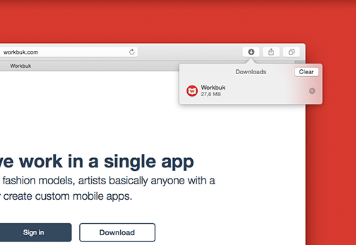
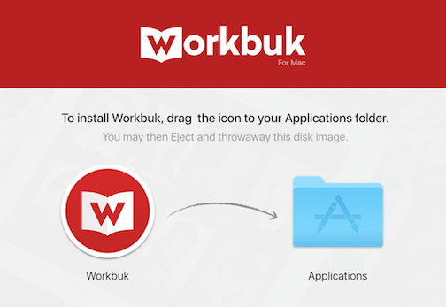
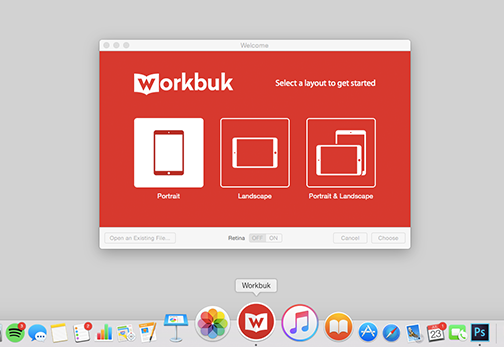

Dowloading Workbuk for Mac
If your download didn't start,
click here

1. Download and Install
Click the Workbuk file under Downloads to install.

2. Add Workbuk to Applications
Drag Workbuk to your Applications folder.

3. Get Started
Launch Workbuk and start uploading your portfolio!